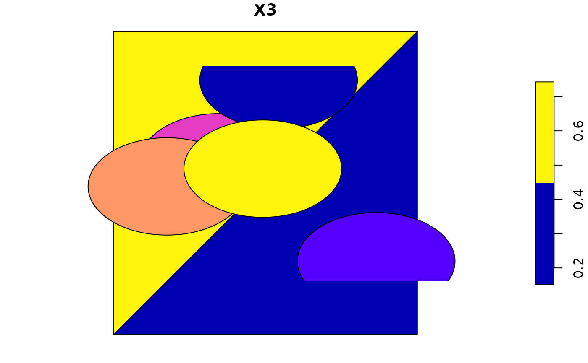

aggregate an sf object, possibly union-ing geometries
# S3 method for sf aggregate(x, by, FUN, ..., do_union = TRUE, simplify = TRUE, join = st_intersects)
Arguments
| x | object of class sf |
|---|---|
| by | either a list of grouping vectors with length equal to |
| FUN | function passed on to aggregate, in case |
| ... | arguments passed on to |
| do_union | logical; should grouped geometries be unioned using st_union? See details. |
| simplify | logical; see aggregate |
| join | logical spatial predicate function to use if |
Value
an sf object with aggregated attributes and geometries; additional grouping variables having the names of names(ids) or are named Group.i for ids[[i]]; see aggregate.
Details
In case do_union is FALSE, aggregate will simply combine geometries using c.sfg. When polygons sharing a boundary are combined, this leads to geometries that are invalid; see https://github.com/r-spatial/sf/issues/681.
Note
Does not work using the formula notation involving ~ defined in aggregate.
Examples
m1 = cbind(c(0, 0, 1, 0), c(0, 1, 1, 0)) m2 = cbind(c(0, 1, 1, 0), c(0, 0, 1, 0)) pol = st_sfc(st_polygon(list(m1)), st_polygon(list(m2))) set.seed(1985) d = data.frame(matrix(runif(15), ncol = 3)) p = st_as_sf(x = d, coords = 1:2) plot(pol)(p_ag1 = aggregate(p, pol, mean))#> Simple feature collection with 2 features and 1 field #> geometry type: POLYGON #> dimension: XY #> bbox: xmin: 0 ymin: 0 xmax: 1 ymax: 1 #> epsg (SRID): NA #> proj4string: NA #> X3 geometry #> 1 0.5951766 POLYGON ((0 0, 0 1, 1 1, 0 0)) #> 2 0.2997908 POLYGON ((0 0, 1 0, 1 1, 0 0))# works when x overlaps multiple objects in 'by': p_buff = st_buffer(p, 0.2) plot(p_buff, add = TRUE)(p_ag2 = aggregate(p_buff, pol, mean)) # increased mean of second#> Simple feature collection with 2 features and 1 field #> geometry type: POLYGON #> dimension: XY #> bbox: xmin: 0 ymin: 0 xmax: 1 ymax: 1 #> epsg (SRID): NA #> proj4string: NA #> X3 geometry #> 1 0.5951766 POLYGON ((0 0, 0 1, 1 1, 0 0)) #> 2 0.5958297 POLYGON ((0 0, 1 0, 1 1, 0 0))# with non-matching features m3 = cbind(c(0, 0, -0.1, 0), c(0, 0.1, 0.1, 0)) pol = st_sfc(st_polygon(list(m3)), st_polygon(list(m1)), st_polygon(list(m2))) (p_ag3 = aggregate(p, pol, mean))#> Simple feature collection with 3 features and 1 field #> geometry type: POLYGON #> dimension: XY #> bbox: xmin: -0.1 ymin: 0 xmax: 1 ymax: 1 #> epsg (SRID): NA #> proj4string: NA #> X3 geometry #> 1 NA POLYGON ((0 0, 0 0.1, -0.1 ... #> 2 0.5951766 POLYGON ((0 0, 0 1, 1 1, 0 0)) #> 3 0.2997908 POLYGON ((0 0, 1 0, 1 1, 0 0))plot(p_ag3)# In case we need to pass an argument to the join function: (p_ag4 = aggregate(p, pol, mean, join = function(x, y) st_is_within_distance(x, y, dist = 0.3)))#> Simple feature collection with 3 features and 1 field #> geometry type: POLYGON #> dimension: XY #> bbox: xmin: -0.1 ymin: 0 xmax: 1 ymax: 1 #> epsg (SRID): NA #> proj4string: NA #> X3 geometry #> 1 NA POLYGON ((0 0, 0 0.1, -0.1 ... #> 2 0.5951766 POLYGON ((0 0, 0 1, 1 1, 0 0)) #> 3 0.5999887 POLYGON ((0 0, 1 0, 1 1, 0 0))